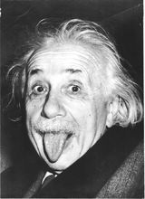

| 人物评价 |
| 爱因斯坦厉害的地方是，一方面，他知道一些数学，对于数学中很妙的地方有直觉的欣赏的能力；另一方面，他对物理中的现象也有他的近距离的了解…… |

1.爱因斯坦常常被称为一个孤独的人。数学想象的领域有助于把精神从纷繁的俗物中解脱出来，就这个意义而言，我认为他确实是一个孤独的人。他的哲学可以叫做一种超验的唯物论，这种哲学达到了形而上学的前沿，那里可以完全割断对自我世界的纠缠。对我来说，科学和艺术都是我们天性的表现，它们高出我们的生物学需要之上而具有终极价值。（泰戈尔评价）
2.爱因斯坦的理论，最初受到许多人的反对，就连当时一些著名物理学家也对这位年青人的论文表示怀疑。然而，随着科学的发展，大量的科学实验证明爱因斯坦的理论是正确的，爱因斯坦才一跃而成为世界著名的科学家，成为20世纪世界最伟大的科学家。（新华网评价）
3.爱因斯坦厉害的地方是，一方面，他知道一些数学，对于数学中很妙的地方有直觉的欣赏的能力；另一方面，他对物理中的现象也有他的近距离的了解。他跟所有人都不同的地方就在于，他既能近看，又能远看。这就好像电影中既有近距离的镜头，又有远距离的镜头；能从近处又能从远处自由地切换，那就很厉害了。大多数人都只有一个镜头，或只能从近处看，或只能从远距离看，不会自由切换。（杨振宁评价）